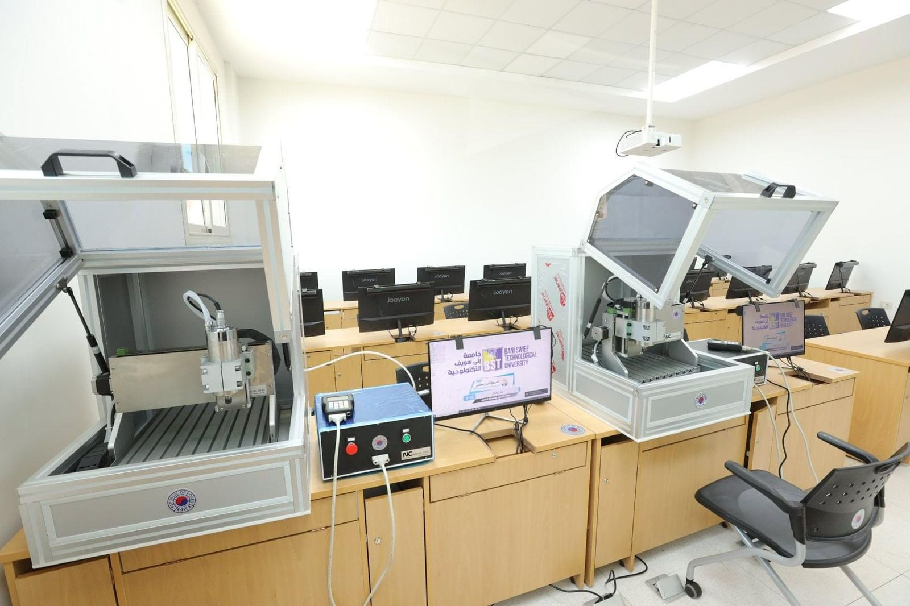

– الأهداف العامة للبرنامج
تزويد الخريجين بالمهارات العملية والمعلومات والمعارف اللازمة لممارسة العمل في مهنة اوتوترونكس والتي تمكنهم من التقدم في الحياة العملية والتنافس ع سوق العمل.
إكساب الخريجين المهارات الشخصية والقابلة للنقل ومهارات إدارة وممارسة العمل في مهنة أوتوترونكس وهذه المهارات تشمل الاتصال والقدرة على التحليل العلمي وتوصيف للمشكلات والعمل على حلها.
المساهمة الفعالة في تطبيق السياسات القومية المنشودة بتلبية احتياجات المجتمع المهنية بإمداده بخريجين ذوي مهارات مهنية عالية في مجال الأوتورونکس.
تشجيع إقامة مشروعات خدمية صغيرة في مجال التطبيقات الإلكترونية الدقيقة في السيارات للمشاركة في سوق العمل باعتماد الخريج على نفسه.
المخرجات التعليمية المستهدفة من البرنامج
المعرفة والفهم
أ- يوضح المفاهيم والمصطلحات والتعاريف الأساسية المرتبطة بالعلوم الاجتماعية والإنسانية والأساسية في مجال تخصح الأوتوترونکس.
ب- يتعرف على المفاهيم الأساسية المرتبطة بنظم المعلومات والبرامج المختلفة المستخدمة في مجال الأوتوترونکس.
جـ- يتعرف على المفاهيم والمبادئ والعلاقات والنظريات والقوانين والأسس التي تتطلبها دراسة مقررات برنامج الاوتوترونكس.
د- يلم بالمعارف الأساسية اللازمة لاستخدام الأنواع المختلفة للماكينات والآلات والمعدات والأدوات والتجهيزات المستخدمة بالورش.
هـ- یلم بالمعارف والمفاهيم الأساسية المتعلقة بأنظمة ومكونات السيارات والتي تشمل البناء والمواصفات ونظرية العمل.
و- يتعرف على الطرق المختلفة لتشخيص الأعطال الميكانيكية والكهربائية والإلكترونية في انظمة ومكونات السيارات ويوضح مسببات الأعطال.
القدرات الذهنية
أ- يستنتج من العلوم الأساسية والتخصصية الأفكار والمقترحات بشكل مستقل أو بشكل متعاون في مجال الأوتورونکس.
ب – يحلل أسباب الأعطال الشائعة للمنظومات الكهربائية والإلكترونية الأساسية للسيارات.
جـ- يقارن بين الدوائر والأداء الوظيفي والأنواع المختلفة للمنظومات والمكونات الأساسية للسيارة.
د- يصف تكوين المكونات والمنظومات الأساسية للسيارة والعدد والأدوات وأجهزة الفحص والاختبار المستعملة في تشخيص وصيانة وإصلاح المنظومات والمكونات الأساسية الميكانيكية والكهربائية والالكترونية للسيارة
هـ- يقيم نتائج الاختبارات المختلفة التي تجري على المنظومات والمكونات الأساسية الميكانيكية والكهربائية والإلكترونية للسيارة.
و- يختار العدد والأدوات والاجهزة المناسبة لتنفيذ اجراءات التشخيص والصيانة والإصلاح للمنظومات والمكونات الأساسية الميكانيكية والكهربائية والإلكترونية للسيارة وأسلوب الصيانة المناسب لكل وحدة من وحدات السيارة.
المهارات
أ- يقرأ الرسومات الفنية والدوائر الميكانيكية والكهربية والإلكترونية للمنظومات المختلفة للسيارات وكتالوجات الخدمة والصيانة وبلتزم بتعليمات التشغيل.
ب- يطيق اشتراطات السلامة والصحة المهنية والبيئية في مجال التخصص.
ج- يجري الأعمال الاساسية الخاصة بفك وتجميع المنظومات والمكونات الأساسية للسيارة.
د- يستخدم الحاسب الآلي بقدرة عالية ويوظفه في تحسين الإنتاج والعمليات المرتبطة بالتخصص.
هـ- يشخص الأعطال الميكانيكية والكهربية والإلكترونية للمكونات والمنظومات المختلفة للسيارات باستخدام أجهزة التشخيص العادية والحديثة.
و- يجري أعمال الإصلاحات الميكانيكية والكهربية والإلكترونية للمكونات والمنظومات المختلفة للسيارات.
ز- يستخدم ويصون أدوات ومعدات وتجهيزات ورش السيارات شاملة العدد اليدوية والكهربائية والميكانيكية وأدوات وأجهزة القياس والضغط.
ح- ينفذ مشروع مقترح في مجال التخصص.

Choose Your Grade
- Grade one
- Grade Two
- Grade Three
- Grade Four